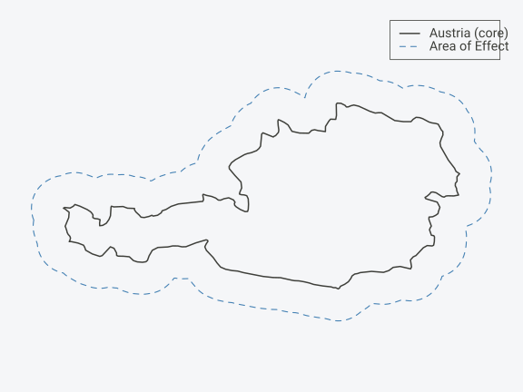
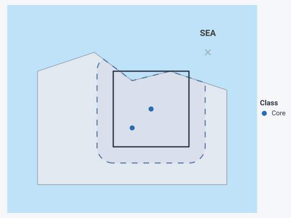
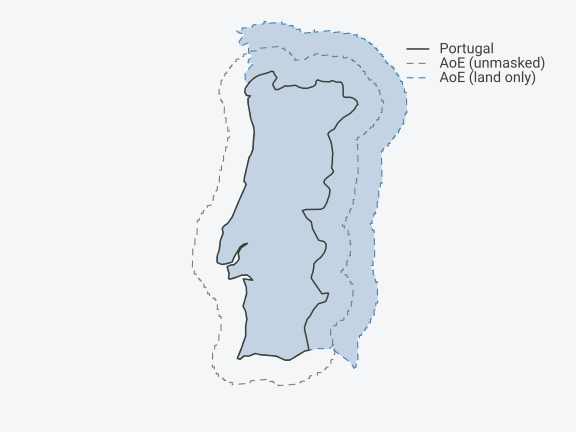
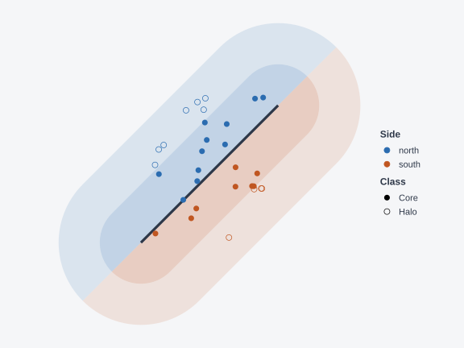

Installation
install.packages("areaOfEffect") # CRAN
install.packages("pak") # development version
pak::pak("gcol33/areaOfEffect")Overview
The areaOfEffect package classifies spatial points by
their position relative to a region’s boundary—without requiring sf
expertise.
Dataframe in → dataframe out.
Points are classified as:
Core: inside the original support
Halo: outside the original but inside the area of effect
Pruned: outside the AoE entirely (removed)
By default, halos are defined as equal area to the core—a proportion-based definition that enables consistent cross-region comparisons.
Getting Started
From a Dataframe
The simplest usage: pass a dataframe with coordinates and a country name.
# Your occurrence data
observations <- data.frame(
species = c("Oak", "Beech", "Pine", "Spruce"),
lon = c(14.5, 15.2, 16.8, 20.0),
lat = c(47.5, 48.1, 47.2, 48.5)
)
# Classify relative to Austria
result <- aoe(observations, "Austria")
result$aoe_class
#> [1] "core" "core" "halo"The package auto-detects coordinate columns (lon/lat, x/y, longitude/latitude, etc.).
Austria Example
# Get Austria and transform to equal-area projection
austria <- get_country("AT")
austria_ea <- st_transform(austria, "ESRI:54009")
# Create a point inside Austria
dummy_pt <- st_centroid(austria_ea)
#> Warning: st_centroid assumes attributes are constant over geometries
# Run aoe() to get geometries (uses buffer method by default)
result <- aoe(dummy_pt, austria_ea)
geoms <- aoe_geometry(result, "both")
# Extract geometries
austria_geom <- geoms[geoms$type == "original", ]
aoe_geom <- geoms[geoms$type == "aoe", ]
# Plot
par(mar = c(1, 1, 1, 1), bty = "n")
plot(st_geometry(aoe_geom), border = "steelblue", lty = 2, lwd = 1.5)
plot(st_geometry(austria_geom), border = "black", lwd = 2, add = TRUE)
legend("topright",
legend = c("Austria (core)", "Area of Effect"),
col = c("black", "steelblue"),
lty = c(1, 2),
lwd = c(2, 1.5),
inset = 0.02)
Austria (dark) with its area of effect (blue dashed). The halo has equal area to the core.
Basic Usage with Custom Polygons
support <- st_as_sf(
data.frame(id = 1),
geometry = st_sfc(st_polygon(list(
cbind(c(0, 100, 100, 0, 0), c(0, 0, 100, 100, 0))
))),
crs = 32631
)Create observation points:
pts <- st_as_sf(
data.frame(
id = 1:5,
value = c(10, 20, 15, 25, 30)
),
geometry = st_sfc(
st_point(c(50, 50)), # center
st_point(c(10, 10)), # near corner
st_point(c(95, 50)), # near edge
st_point(c(120, 50)), # outside, in halo
st_point(c(250, 250)) # far outside
),
crs = 32631
)Apply the area of effect:
result <- aoe(pts, support)
print(result)
#> Area of Effect Result
#> ─────────────────────
#> Points: 4 (3 core, 1 halo)
#> Supports: 1
#> Scale: 0.414 (multiplier 1.41, theoretical halo:core 1.00)
#>
#> Simple feature collection with 4 features and 5 fields
#> Geometry type: POINT
#> Dimension: XY
#> Bounding box: xmin: 10 ymin: 10 xmax: 120 ymax: 50
#> Projected CRS: WGS 84 / UTM zone 31N
#> point_id support_id aoe_class id value geometry
#> 1 1 1 core 1 10 POINT (50 50)
#> 2 2 1 core 2 20 POINT (10 10)
#> 3 3 1 core 3 15 POINT (95 50)
#> 4 4 1 halo 4 25 POINT (120 50)The result contains only points inside the AoE, with their classification:
result$aoe_class
#> [1] "core" "core" "core" "halo"Multiple Supports
Process multiple regions at once:
# Two adjacent regions
supports <- st_as_sf(
data.frame(region = c("A", "B")),
geometry = st_sfc(
st_polygon(list(cbind(c(0, 50, 50, 0, 0), c(0, 0, 100, 100, 0)))),
st_polygon(list(cbind(c(50, 100, 100, 50, 50), c(0, 0, 100, 100, 0))))
),
crs = 32631
)
# Points that may fall in overlapping AoEs
pts_multi <- st_as_sf(
data.frame(id = 1:3),
geometry = st_sfc(
st_point(c(25, 50)), # inside A
st_point(c(50, 50)), # on boundary
st_point(c(75, 50)) # inside B
),
crs = 32631
)
result_multi <- aoe(pts_multi, supports)
print(result_multi)
#> Area of Effect Result
#> ─────────────────────
#> Points: 4 (4 core, 0 halo)
#> Supports: 2
#> Scale: 0.414 (multiplier 1.41, theoretical halo:core 1.00)
#>
#> Simple feature collection with 4 features and 4 fields
#> Geometry type: POINT
#> Dimension: XY
#> Bounding box: xmin: 25 ymin: 50 xmax: 75 ymax: 50
#> Projected CRS: WGS 84 / UTM zone 31N
#> point_id support_id aoe_class id geometry
#> 1 1 1 core 1 POINT (25 50)
#> 2 2 1 core 2 POINT (50 50)
#> 3 2 2 core 2 POINT (50 50)
#> 4 3 2 core 3 POINT (75 50)Points can appear multiple times (once per support whose AoE contains them).
Using a Mask (Coastlines)
For coastal regions, sea is a hard boundary. Provide a mask to constrain the AoE:
# Create a coastal support
support_coast <- st_as_sf(
data.frame(id = 1),
geometry = st_sfc(st_polygon(list(
cbind(c(40, 80, 80, 40, 40), c(20, 20, 60, 60, 20))
))),
crs = 32631
)
# Create land mask (irregular coastline)
land_mask <- st_as_sf(
data.frame(id = 1),
geometry = st_sfc(st_polygon(list(cbind(
c(0, 100, 100, 70, 50, 30, 0, 0),
c(0, 0, 50, 60, 55, 70, 60, 0)
)))),
crs = 32631
)
# Create sea area (inverse of land for visualization)
sea_area <- st_as_sf(
data.frame(id = 1),
geometry = st_sfc(st_polygon(list(cbind(
c(-20, 120, 120, -20, -20),
c(-20, -20, 100, 100, -20)
)))),
crs = 32631
)
sea_area <- st_difference(sea_area, land_mask)
#> Warning: attribute variables are assumed to be spatially constant throughout
#> all geometries
# Create some points
pts_coast <- st_as_sf(
data.frame(id = 1:4, class = c("core", "core", "halo", "pruned")),
geometry = st_sfc(
st_point(c(60, 40)), # core
st_point(c(50, 30)), # core
st_point(c(30, 40)), # halo (on land)
st_point(c(90, 70)) # would be halo but in sea
),
crs = 32631
)
# Apply with mask
result_coast <- aoe(pts_coast[1:3, ], support_coast, mask = land_mask)
# Get geometries for visualization
aoe_masked <- aoe_geometry(result_coast, "aoe")
support_geom <- aoe_geometry(result_coast, "original")
# Prepare point data for plotting
result_coast$class <- result_coast$aoe_class
pruned_pt <- pts_coast[4, ]
# Plot with ggplot2
ggplot() +
geom_sf(data = sea_area, fill = aoe_colors$sea, color = NA) +
geom_sf(data = land_mask, fill = aoe_colors$land, color = aoe_colors$mask, linewidth = 0.8) +
geom_sf(data = aoe_masked, fill = aoe_colors$aoe_fill, color = aoe_colors$aoe_border,
linetype = "dashed", linewidth = 1) +
geom_sf(data = support_geom, fill = NA, color = aoe_colors$support, linewidth = 1.2) +
geom_sf(data = result_coast, aes(color = class), size = 4) +
geom_sf(data = pruned_pt, color = aoe_colors$point_pruned, shape = 4, size = 4, stroke = 1.5) +
scale_color_manual(
values = c("core" = aoe_colors$point_core, "halo" = aoe_colors$point_halo),
labels = c("Core", "Halo")
) +
annotate("text", x = 90, y = 80, label = "SEA", color = "black",
fontface = "bold", size = 5) +
coord_sf(xlim = c(-10, 110), ylim = c(-10, 90)) +
labs(color = "Class") +
theme_aoe()
AoE with land mask. The AoE is clipped to the land boundary.
Real-World Example: Portugal
The package includes bundled country boundaries and a global land
mask. Use mask = "land" to clip AoE to coastlines:
# Create a point inside Portugal (approximate center of mainland)
dummy <- st_as_sf(
data.frame(id = 1),
geometry = st_sfc(st_point(c(-8, 39.5))),
crs = 4326
)
# Without mask
result_no_mask <- aoe(dummy, "PT")
#> Using largest polygon (96.8% of total area); 8 smaller polygon(s) dropped. Set largest_polygon = FALSE to include all.
aoe_no_mask <- aoe_geometry(result_no_mask, "aoe")
# With mask + area=1 for equal land area
result_masked <- aoe(dummy, "PT", mask = "land", area = 1)
#> Using largest polygon (96.8% of total area); 8 smaller polygon(s) dropped. Set largest_polygon = FALSE to include all.
aoe_masked <- aoe_geometry(result_masked, "aoe")
# Get support geometry
support_geom <- aoe_geometry(result_masked, "original")
# Transform to equal area for plotting
crs_ea <- st_crs("+proj=laea +lat_0=39.5 +lon_0=-8 +datum=WGS84")
aoe_no_mask_ea <- st_transform(aoe_no_mask, crs_ea)
aoe_masked_ea <- st_transform(aoe_masked, crs_ea)
support_ea <- st_transform(support_geom, crs_ea)
# Plot with padding to avoid clipping
bbox <- st_bbox(aoe_no_mask_ea)
pad <- (bbox[4] - bbox[2]) * 0.05
par(mar = c(1, 1, 1, 1), bty = "n")
plot(st_geometry(aoe_no_mask_ea), border = "gray50", lty = 2, lwd = 1.5,
xlim = c(bbox[1] - pad, bbox[3] + pad),
ylim = c(bbox[2] - pad, bbox[4] + pad))
plot(st_geometry(aoe_masked_ea), col = rgb(0.3, 0.5, 0.7, 0.3),
border = "steelblue", lty = 2, lwd = 1.5, add = TRUE)
plot(st_geometry(support_ea), border = "black", lwd = 2, add = TRUE)
legend("topright",
legend = c("Portugal", "AoE (unmasked)", "AoE (land only)"),
col = c("black", "gray50", "steelblue"),
lty = c(1, 2, 2),
lwd = c(2, 1.5, 1.5),
bty = "n",
inset = 0.05)
Portugal with land-masked AoE. The halo extends into Spain but not into the Atlantic.
The area = 1 parameter ensures the halo has equal land
area to the core, even after the ocean is masked out. Without this,
coastline clipping would reduce the effective halo area.
Scale Parameter
The scale parameter controls halo size as a proportion
of core area.
# Default: equal core/halo areas (scale = sqrt(2) - 1)
result_default <- aoe(pts, support)
# Scale = 1: larger halo (3:1 area ratio)
result_large <- aoe(pts, support, scale = 1)| Scale | Halo:Core Area |
|---|---|
sqrt(2) - 1 (default) |
1:1 |
1 |
3:1 |
0.5 |
1.25:1 |
Area Parameter (Target Halo Area)
Sometimes you need a specific halo area regardless of masking. The
area parameter specifies the target halo area as a
proportion of the original support:
# Halo area = original area (same as scale = sqrt(2) - 1 without mask)
result <- aoe(pts, support, area = 1)
# Halo area = half of original
result <- aoe(pts, support, area = 0.5)Unlike scale, area accounts for masking:
the function finds the scale that produces the target halo area
after mask intersection. This is useful for coastal regions
where scale alone would produce inconsistent effective areas.
# Target area = 1 means halo = original, even after coastline clipping
result <- aoe(pts, support, area = 1, mask = "land")Adaptive Expansion with aoe_expand()
When some supports have too few points at baseline AoE,
aoe_expand() finds the minimum scale needed to capture a
target number of points:
# Create sparse data
set.seed(42)
pts_sparse <- st_as_sf(
data.frame(id = 1:15),
geometry = st_sfc(c(
lapply(1:5, function(i) st_point(c(runif(1, 20, 80), runif(1, 20, 80)))),
lapply(1:10, function(i) st_point(c(runif(1, -50, 150), runif(1, -50, 150))))
)),
crs = 32631
)
# Expand until at least 10 points are captured
result_expand <- aoe_expand(pts_sparse, support, min_points = 10)Two safety caps prevent unreasonable expansion:
max_area = 2(default): halo area cannot exceed 2× the originalmax_dist: maximum expansion distance in CRS units
# Strict caps
result <- aoe_expand(pts, support,
min_points = 50,
max_area = 1.5, # halo ≤ 1.5× original
max_dist = 500) # max 500m expansionCheck expansion details:
info <- attr(result_expand, "expansion_info")
info
#> support_id scale_used points_captured target_reached cap_hit
#> 1 1 0.6412593 10 TRUE noneBalanced Sampling with aoe_sample()
Core regions often dominate due to point density.
aoe_sample() provides stratified sampling to balance
core/halo representation:
# Create imbalanced data (many core, few halo)
set.seed(42)
pts_imbal <- st_as_sf(
data.frame(id = 1:60),
geometry = st_sfc(c(
lapply(1:50, function(i) st_point(c(runif(1, 10, 90), runif(1, 10, 90)))),
lapply(1:10, function(i) st_point(c(runif(1, 110, 140), runif(1, 10, 90))))
)),
crs = 32631
)
result_imbal <- aoe(pts_imbal, support, scale = 1)
# Default: balance core/halo (downsamples core to match halo)
set.seed(123)
balanced <- aoe_sample(result_imbal)
table(balanced$aoe_class)
#>
#> core halo
#> 10 10Custom ratios and fixed sample sizes:
# Fixed n with 70/30 split
set.seed(123)
sampled <- aoe_sample(result_imbal, n = 20, ratio = c(core = 0.7, halo = 0.3))
table(sampled$aoe_class)
#>
#> core halo
#> 14 6For multiple supports, use by = "support" to sample
within each:
sampled <- aoe_sample(result_multi, by = "support")Border Classification with aoe_border()
When your study involves a boundary line rather than a
polygon (e.g., a river, mountain range, or political border), use
aoe_border() to classify points by their distance from and
side of the border.
# Create a diagonal border line
border_line <- st_as_sf(
data.frame(id = 1),
geometry = st_sfc(st_linestring(matrix(
c(0, 0,
100, 100), ncol = 2, byrow = TRUE
))),
crs = 32631
)
# Create points on both sides
set.seed(42)
pts_border <- st_as_sf(
data.frame(id = 1:30),
geometry = st_sfc(c(
# Points on side 1 (above the line)
lapply(1:15, function(i) st_point(c(runif(1, 10, 90), runif(1, 10, 90) + 20))),
# Points on side 2 (below the line)
lapply(1:15, function(i) st_point(c(runif(1, 10, 90), runif(1, 10, 90) - 20)))
)),
crs = 32631
)
# Classify by distance from border
result_border <- aoe_border(
pts_border, border_line,
width = 30,
side_names = c("north", "south")
)
# Extract geometries for ggplot2
geoms <- attr(result_border, "border_geometries")
# Plot with ggplot2
ggplot() +
# Halo zones (background)
geom_sf(data = geoms$side1_halo, fill = paste0(aoe_colors$side_a, "20"), color = NA) +
geom_sf(data = geoms$side2_halo, fill = paste0(aoe_colors$side_b, "20"), color = NA) +
# Core zones
geom_sf(data = geoms$side1_core, fill = paste0(aoe_colors$side_a, "40"), color = NA) +
geom_sf(data = geoms$side2_core, fill = paste0(aoe_colors$side_b, "40"), color = NA) +
# Border line
geom_sf(data = geoms$border, color = aoe_colors$support, linewidth = 1.5) +
# Points
geom_sf(data = result_border,
aes(color = side, shape = aoe_class), size = 3) +
scale_color_manual(values = c("north" = aoe_colors$side_a, "south" = aoe_colors$side_b)) +
scale_shape_manual(values = c("core" = 16, "halo" = 1),
labels = c("Core", "Halo")) +
labs(color = "Side", shape = "Class") +
theme_aoe()
Border classification. Points are classified by side (blue vs orange) and distance (core vs halo) from the border line.
The aoe_border() function:
Creates symmetric buffer zones on both sides of the border
Classifies points as “core” (near border) or “halo” (farther away)
Assigns each point to a side based on position relative to the line
Area-Based Border Zones
Use the area parameter to specify target zone areas
instead of fixed widths:
# Each side's core zone has area 5000 (in CRS units²)
result <- aoe_border(pts, border, area = 5000)Sampling from Border Results
aoe_sample() also works with border results, allowing
stratification by side or class:
# Balance by side (equal north/south)
set.seed(123)
balanced_side <- aoe_sample(result_border, ratio = c(north = 0.5, south = 0.5))
table(balanced_side$side)
#>
#> north south
#> 12 12
# Balance by distance class
set.seed(123)
balanced_class <- aoe_sample(result_border, by = "class")
table(balanced_class$aoe_class)
#>
#> core halo
#> 11 11Diagnostics
aoe_summary(result)
#> support_id n_total n_core n_halo prop_core prop_halo
#> 1 1 4 3 1 0.75 0.25Summary
aoe()classifies points as “core” or “halo”Works with dataframes or sf objects
Pass country codes directly:
aoe(df, "AT")Area-based halos enable consistent cross-country comparisons
Use
maskfor coastlines and hard boundariesUse
areaparameter for target halo area (accounts for masking)Use
aoe_expand()for adaptive expansion to capture minimum pointsUse
aoe_sample()for balanced core/halo samplingUse
aoe_border()for border/line-based classificationUse
aoe_summary()for diagnostics